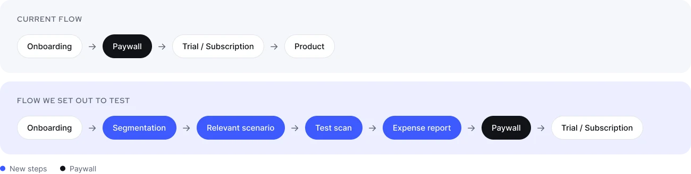
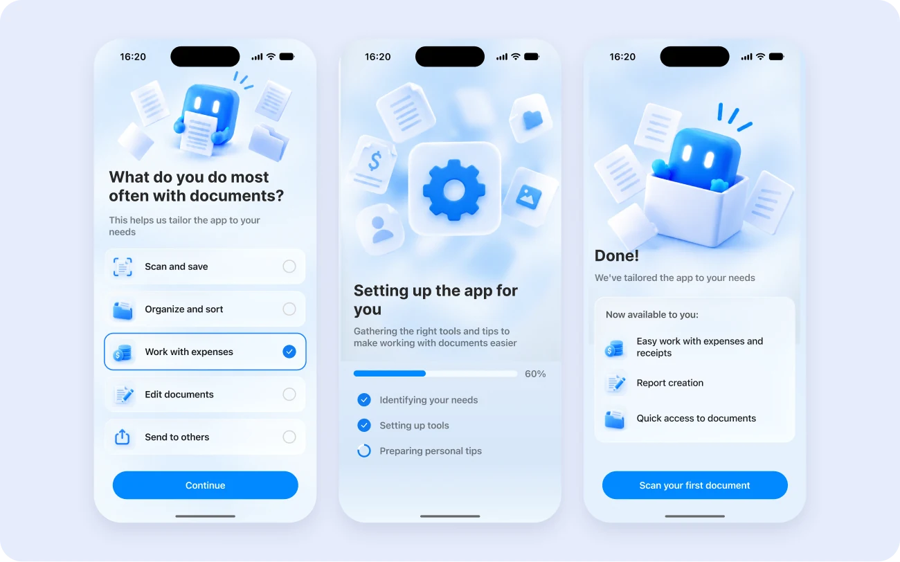
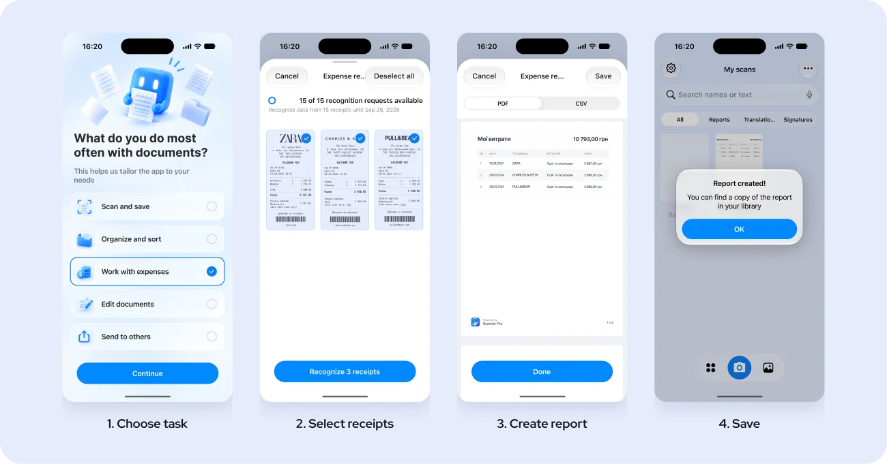
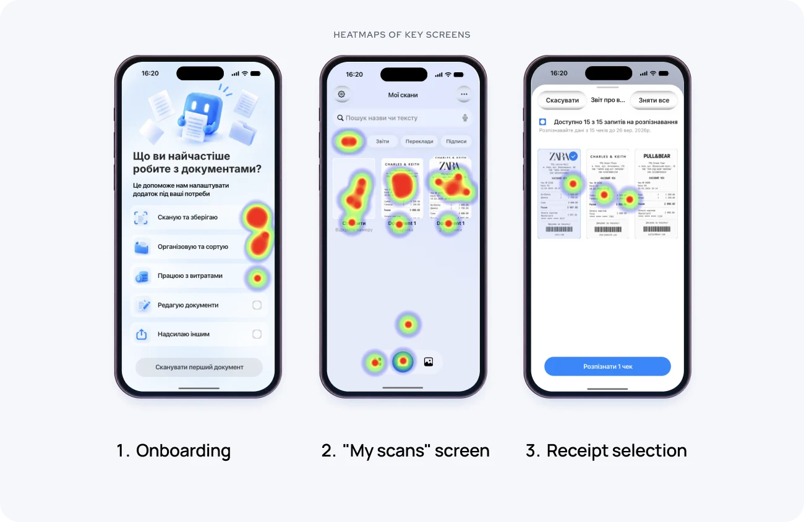
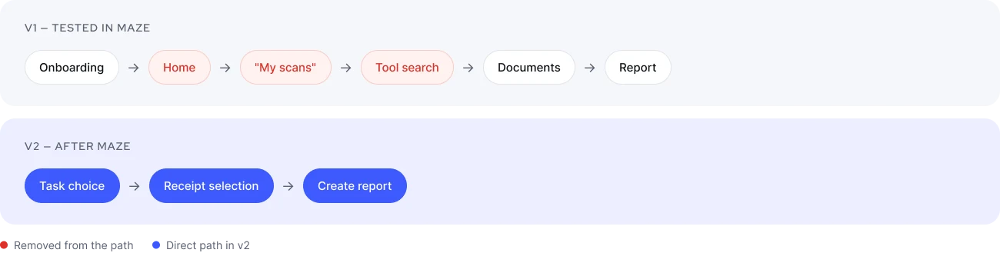

Concept · iOS (iPhone) · Team project
Scanner Pro
Onboarding that starts with the user's task. A team concept redesign of the first-run experience in Scanner Pro (iPhone), based on a product brief from Readdle. The goal is to lead new users to their first valuable action, and from there to a trial.
- Product
- Scanner Pro by Readdle: an app for iPhone and iPad for scanning, organizing and sharing documents. Core features are free; advanced ones are in a paid Plus subscription
- Problem
- Per the brief, only 1 in 10 new users starts a free trial or subscription within 24 hours of install. Onboarding lists features but doesn't account for what each user came to do
- Solution
- Onboarding asks about the user's task and leads to the relevant scenario. The expense-report path is designed end to end
- What we did
- Survey (11 people), competitor analysis, task-based onboarding for iPhone, interactive prototype, usability test in Maze (9 people), iteration, A/B test plan
- Status
- Concept, September 2026. Prototype tested in Maze; not shipped, no production data
- Result
- 66.7% task success (incl. early technical drop-offs), 4.2 / 5 ease rating. The test found the main friction point, finding "Create report". The flow was redesigned around it but not yet re-tested

Context
Scanner Pro has been on the market for 17 years. It offers many tools: scanning, OCR, expense reports, export, Workflows and more. Users come with different tasks: scanning a document, editing and signing it, building a report, working with expenses.
The business problem. The brief set the baseline at 10% conversion from install to trial or subscription within 24 hours. No funnel, segment or traffic-source breakdown was available, so we separated facts from assumptions throughout.
Baseline, per the brief
10%
of new users start a trial or subscription within 24 hours of install
Brief metrics
Primary: install → trial / subscription conversion within 24 hoursSecondary: activation, the share of new users who create or import their first scan
Constraints
iPhone only, following Apple Human Interface GuidelinesNo changes to features, prices or the paywall offer
Collect only the data needed for the first experience, nothing personal or sensitive
Starting hypothesis and what research showed
Users know what they want to do, but not always which tool does it
In the current flow, onboarding shows features, then the paywall, then the home screen. From there, users find the right tool on their own. We assumed this means users need more time to reach their first value.

Competitors
Scan Me, CamScanner, Adobe Scan and iOS Notes more often lead the user through a concrete task than through a list of features.
Survey
Google Form, 11 respondents: students, freelancers, office workers, small business owners. It focused on how people handle receipts. It's a small, directional sample.
9 / 11
regularly keep receipts
6 / 11
combine information from several receipts into one report
3 / 5
average convenience rating of their current process
Organizing receipts often stays manual: searching, sorting, moving data into spreadsheets or other tools.
Refined hypothesis
If onboarding identifies the user's task and leads them to the relevant scenario, they will find the right tool faster and complete the target action.
Focus segment: users who work with expenses.
Decision 01
Ask about the task before showing features
Problem
One onboarding for everyone explains the product but doesn't account for what each user came to do.Cost
Extra onboarding steps (the question, setup and summary screens), in exchange for a relevant first experience.Decision
After the welcome screen, onboarding asks one question: "What do you do most often with documents?". A short setup step follows, then a summary of what's now available, e.g. expenses and receipts, reports, quick access to documents.

Decision 02
Design one scenario end to end and plan the paywall after the first report
Why expenses
In the survey, receipts were a frequent, often manual job.Decision
Full path for the segment: we prototyped choosing the task, selecting documents, creating the report and saving it.
Paywall after the first expense report in the target flow: Onboarding → Segmentation → Relevant scenario → Test scan → Expense report → Paywall → Trial. The paywall offer stays unchanged, as the brief required. The Maze test ended at report creation, so paywall placement wasn't tested.

Decision 03
After testing: remove the search for "Create report"
What we tested (v1)
After onboarding, users still went through Home → "My scans" → tool search → documents → report.Main friction point
Finding "Create report".What Maze showed
Onboarding. Users engaged with the options but didn't always pick the one leading to the scenario.
"My scans". Attention went to documents and the bottom navigation. Users looked for the next action but didn't find the tool right away.
Receipt selection. Users selected documents easily, but some didn't find the report tool right away.
Decision (v2)
After the user picks a task, the app goes straight to document selection and report creation. Home and "My scans" are no longer in the path.

Validation
Maze usability test of v1
9 respondents (students, freelancers, office workers), 1 scenario: collect documents and create an expense report.
66.7%
Success rate
Includes early technical drop-offs
4.2 / 5
Ease of creating a report
173.9 s
Average completion time
The current flow wasn't tested in the same setup, so these numbers describe v1 on its own, not an improvement. v2 hasn't been tested yet.
Next step: A/B test
A
Current flow
Onboarding → Home → tool search
B
Task-based flow
Goal → relevant tool → first report
Test metrics (they differ from the brief's)
Primary: activation, measured as the first report createdSecondary: trial / subscription conversion, to check whether reaching value faster moves conversion
Expected impact: less searching and a more relevant first experience may increase activation and trial conversion. This is the hypothesis for the A/B test, not a measured result.
What we'd do next
Test v2
in Maze with the same scenario and compare it to v1.
Rework the onboarding options.
Some users didn't pick the option that leads to their scenario.
Run the A/B test
against the current flow.